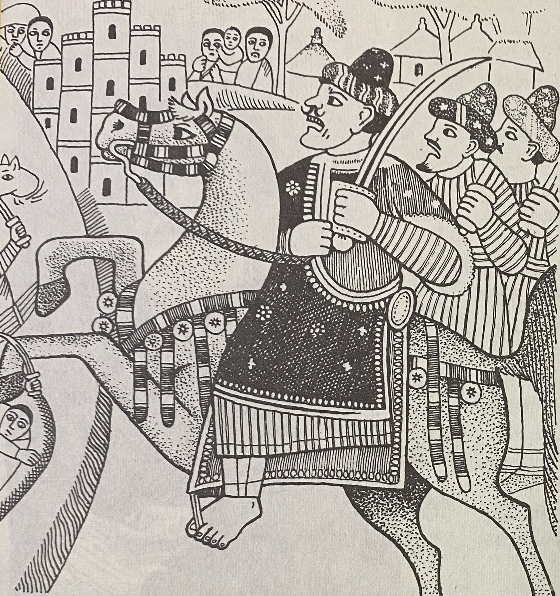

1529
Shimbra Kure. The Imam meets Emperor Dawit II with the smaller army and breaks him. The Ottoman matchlocks he carried up from Zeila panic men who have never stood under gunfire.
Between 1529 and 1543, Imam Ahmad ibn Ibrahim al-Ghazi brought three-quarters of Ethiopia under Adal control. Europe needed a son of Vasco da Gama and four hundred Portuguese musketeers to stop him. The war is taught in every Ethiopian school. It is almost unknown in the West.

Adal did not begin with Ahmad Gurey. It began with a defeat.
In 1415, after the Sultanate of Ifat was destroyed by the Solomonic Emperor Yeshaq I and the Walashma ruler Sa'ad ad-Din II was killed at Zeila2Richard Pankhurst, The Ethiopian Borderlands (Red Sea Press, 1997), pp. 12–18. Discusses the Ifat state and its conquest by Yeshaq I, as well as the shift of power to the Adal sultanate on the Harar plateau., his sons fled to Yemen. They came back fourteen years later and reestablished their state on the Harar plateau under a new name. That state was Adal. The founding logic was already set: this was a polity built from the rubble of a prior one, against an adversary that had never stopped pressing into Muslim lowland territory.
For a century after its founding, Adal fought a grinding border war with the Solomonic emperors, winning some battles, losing others, losing key leaders. By the time Ahmad Gurey consolidated power in 15273J. Spencer Trimingham, Islam in Ethiopia (Oxford University Press, 1952), pp. 89–94. Documents Ahmad's rise to power and his consolidation of authority within the Adal sultanate in the late 1520s., the Muslim highlanders had been in a state of active or latent conflict with their Christian neighbors for over a hundred years. The Abyssinian raids were not abstract grievances. They were living memory.
Ahmad moved first against his own sultan — who he considered incompetent and too cautious — before turning to Ethiopia. He was a general before he was an imam, and a tactician before he was either. He acquired matchlocks and gunpowder from Ottoman traders at Zeila — the same port where his Walashma predecessors had fled a century before.1Paul Lester Stenhouse, trans., The Conquest of Abyssinia (Tsehai Publishers, 2003), pp. 47–52. The chronicle records Ahmad obtaining bunduq (matchlock) and barud (gunpowder). Stenhouse's translator's note (p. xix) traces the etymology: bunduq entered Arabic from Portuguese, barud from Turkish — evidence of the international arms trade reaching the Horn. The Ethiopians had never faced gunpowder weapons in a pitched battle. Ahmad had.
"In Ethiopia the damage which Ahmad Gragn did has never been forgotten. Every Christian highlander still hears tales of Gragn in his childhood."
Paul B. Henze, Layers of Time: A History of Ethiopia (2000)The war began in 1529 as a retaliation. The year before, the Abyssinian general Degelhan had raided Adal, capturing women and children including the mother of Ahmad's commander Abu Bakr Qatin. Ahmad's response was methodical: he split his forces, laid an ambush at Hubat, and destroyed the Abyssinian column. Then he turned west.
Ahmad defeats Emperor Dawit II despite being outnumbered. Both Muslim and Christian sources agree the Ethiopian army was larger4Paul Lester Stenhouse, trans., The Conquest of Abyssinia (Futuh al-Habasha) (Tsehai Publishers, 2003), pp. 64–71. Primary source account of the Battle of Shimbra Kure, confirmed by Ethiopian royal chronicles; contemporary accounts emphasize Adal's numerical disadvantage and the shock of Ottoman firearms.. Ottoman muskets panic troops unused to gunfire. The highland interior opens.
Cannon fire routs the Ethiopians before the infantry engage. Ahmad captures items of the Imperial regalia. Dawit II is never again able to mount a pitched battle. He dies in 1540, stabbed in his bed at Debre Damo by an unknown assailant5Merid Wolde Aregay, Southern Ethiopia and the Christian Kingdom 1508–1708 (PhD thesis, University of London, 1971), pp. 115–122. Discusses Dawit II's decline after Amba Sel and his death at Debre Damo monastery, a significant event marking the end of centralized Ethiopian resistance., a fugitive in his own country.
Ahmad enters the Ethiopian highlands. He sacks Atronsa Maryam, where several Emperors are entombed. He reaches Axum and destroys the Church of Our Lady Mary of Zion — the church in which Abyssinian emperors had been crowned for centuries6G.W.B. Huntingford, trans., The Glorious Victories of Amda Seyon (Oxford University Press, 1965), introduction and historical context; confirmed by Stenhouse's Conquest of Abyssinia, pp. 82–89. Both sources document the religious significance of the Church of Our Lady Mary of Zion and its destruction by Ahmad's forces.. He visits the tomb of Najashi in Negash and names his son Ahmad al-Najashi.
Three-quarters of Ethiopia under Adal control. The Empress is besieged in the capital. The new Emperor Gelawdewos writes to the Portuguese for help. The request takes a year to reach Lisbon and another year to answer.
For twelve years Ahmad governed territory the size of a major European kingdom, administered from a moving camp, sustained by an army that received steady Ottoman resupply through Zeila and Berbera. He built mosques. He personally taught the Quran to converted children. The chronicle of his campaign, the Futuh al-Habasha — written in Arabic by his companion Shihab al-Din Ahmad ibn Abd al-Qadir7Mordechai Abir, Ethiopia and the Red Sea (Frank Cass, 1980), pp. 58–76. Discusses the authorship and reliability of the Futuh al-Habasha as a primary source, its composition during the campaign, and the historical loss of its second half. — covers these years with the detail of someone present at every battle. The second half of the chronicle, which would cover 1537 to 1543, has never been found. Richard Burton claimed to have heard it existed in Mocha or Hudaydah. No one else has confirmed this.
Written by Shihab ad-Din Ahmad ibn Abd al-Qadir, called Arab Faqih, who rode with the army of Imam Ahmad ibn Ibrahim and set down what he saw at each battle.
Shimbra Kure. The Imam meets Emperor Dawit II with the smaller army and breaks him. The Ottoman matchlocks he carried up from Zeila panic men who have never stood under gunfire.
Amba Sel. The cannon scatters the Ethiopians before the lines can close. The imperial regalia is carried off the field. The road into the high country lies open.
The highlands. He climbs into the high country, reaches Axum, and burns the Church of Our Lady Mary of Zion, where the emperors had been crowned for three hundred years.
The army winters in the conquered land, and the Imam himself teaches the Quran to the children of the converted, and
The second volume carried the years 1537 to 1543: the height of the occupation, the Portuguese landing under the son of Vasco da Gama, the battle of Wayna Daga, and the death of the Imam by a Portuguese matchlock. It has never been found.
Richard Burton wrote that he heard a copy survived in Mocha or Hudaydah. No one has confirmed it.
The matchlocks Ahmad bought at Zeila opened Ethiopia. A matchlock at Wayna Daga closed Adal.
The Ethiopian Emperor Gelawdewos had asked Portugal for help. What arrived at Massawa on February 10, 15418R.S. Whiteway, ed., The Portuguese Expedition to Abyssinia 1541–1543 (Hakluyt Society, 1902), pp. 1–12. Contemporary Portuguese account of Cristóvão da Gama's arrival at Massawa with the date confirmed by both Portuguese and Ethiopian sources. was Cristóvão da Gama — son of Vasco da Gama, the explorer who had opened the sea route to India — with 400 musketeers.
This is the detail that locates the Adal war inside world history rather than regional history. Portugal was not a neutral party: they controlled the Indian Ocean. Their trade monopoly depended on keeping the Red Sea and Gulf of Aden free from rival powers. An Adal sultanate armed with Ottoman guns and allied with Ottoman corsairs was, from Lisbon's perspective, an existential threat to their commercial empire. The musketeers sent to Massawa were not a humanitarian gesture.
Ahmad held them off. In a series of engagements in 1542, his forces killed da Gama's men in detail, reduced 400 to 140, captured Cristóvão da Gama himself. Da Gama refused an offer to spare his life if he converted. He was executed. Ahmad sent his weapons to the Ottomans and prepared for the final campaign.
He had miscalculated. The surviving Portuguese regrouped with Gelawdewos. On February 21, 1543, at the Battle of Wayna Daga9Paul Lester Stenhouse, trans., The Conquest of Abyssinia (Tsehai Publishers, 2003), pp. 124–132. The Futuh al-Habasha account of Ahmad's death and the battle's conclusion, with corroboration from Portuguese eyewitness accounts by Whiteway., Imam Ahmad was shot in the chest by a Portuguese musketeer — accounts name him João de Castilho, who charged alone into the Muslim lines and died in the charge. The wounded Ahmad was then beheaded by an Ethiopian cavalry commander named Azmach Calite. When his soldiers saw his banners fall, they broke.
The retreat was immediate and total. Both sides had destroyed each other. Historian Mohammed Hassen argues the Oromo migrations that reshaped the Horn's demographics in the following century happened precisely because Adal and Abyssinia had exhausted themselves at Wayna Daga, leaving a power vacuum neither could fill.
Ahmad's wife, Bati del Wambara, escaped the battlefield with a remnant of the Ottoman soldiers and rode back to Harar. She then did something recorded in the sources without comment, as though it were the obvious thing: she married Ahmad's nephew Nur ibn Mujahid, on one condition — that he avenge Ahmad's death10Merid Wolde Aregay, Southern Ethiopia and the Christian Kingdom 1508–1708 (PhD thesis, University of London, 1971), pp. 156–169. Documents the marriage of Bati del Wambara to Nur ibn Mujahid and the conditions she placed on the union as recorded in both Arabic and Ethiopian sources..
Nur took sixteen years. In 1559 he invaded Fatagar and killed Emperor Gelawdewos in battle11Richard Pankhurst, The Ethiopian Borderlands (Red Sea Press, 1997), pp. 52–68. Discusses the continuation of Adal-Ethiopian conflict under Nur ibn Mujahid and Gelawdewos's death in 1559, documenting the prolonged violence that followed Ahmad's death.. He fought for twelve more years, until, according to a story that may or may not be history, he reached a territory called Kaffa, said the Afan Oromo word for "enough," and returned to Harar. Some scholars believe the province of Kaffa is named for this moment. The historicity is uncertain. The portrait it paints of the era is not.
Adal held on as a state until 1577, when it moved its capital to Aussa and effectively dissolved. The Somali clans that had fought under Ahmad's banner dispersed back into their territories. The Ottoman partnership that had supplied the musketeers and cannons found other theaters. The Harar plateau, which had been the capital of two consecutive Muslim empires for over a century, contracted to a walled city.
The Ethiopian-Adal War is in every Ethiopian school curriculum. Haile Selassie mentioned Ahmad Gurey in his personal memoirs. Henze writes that villagers in northern Ethiopia pointed out sites of churches destroyed by Ahmad as if they had fallen the previous week — and he was writing in 2000, four and a half centuries after the war.
In Somali oral tradition, Ahmad is a national hero. His campaigns are in the gabay. His name is known.
In Western historiography, this war occupies a footnote. The standard explanation is that Cristóvão da Gama's involvement makes it a story about Portuguese expansion, and the Adal side gets summarized accordingly. The more uncomfortable explanation is that a Muslim Somali general who came within a battle of extinguishing one of Africa's oldest Christian kingdoms — and who required a son of Vasco da Gama to stop him — does not fit the frame through which 16th-century African history is usually taught.
The Futuh al-Habasha exists. The battles are documented on both sides, in Arabic, Amharic, and Portuguese. The Ottoman diplomatic correspondence survives. This is not a gap in the sources. It is a gap in the curriculum.